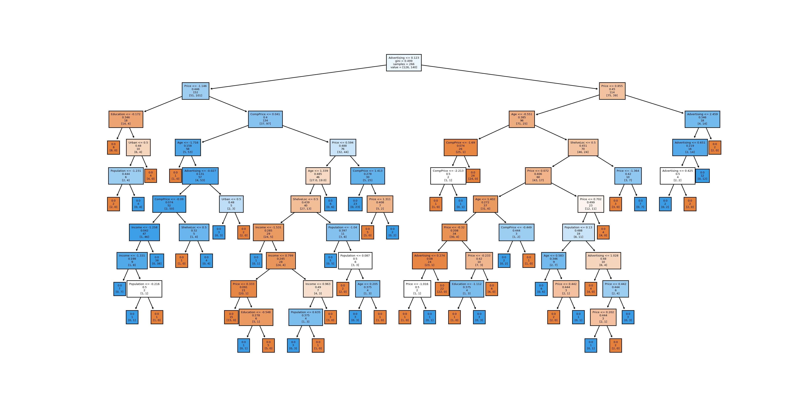
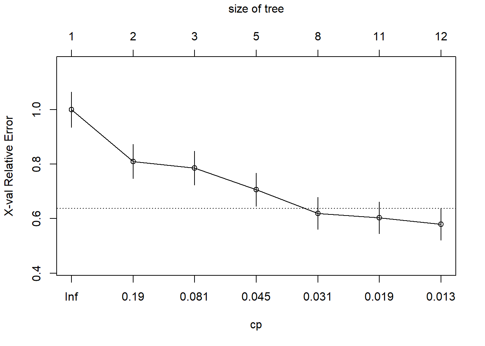
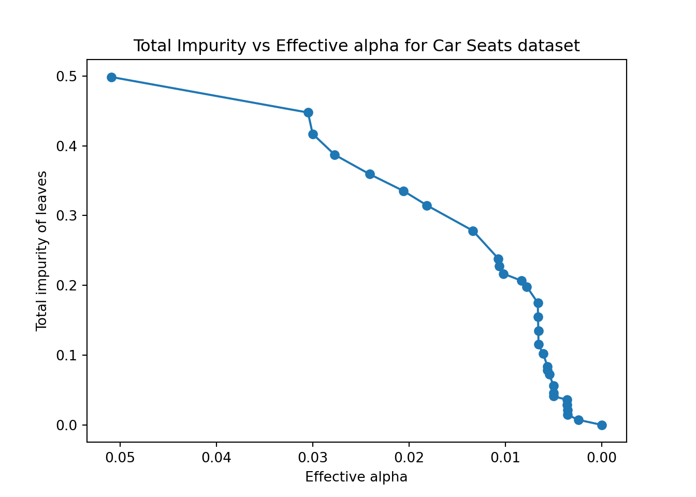
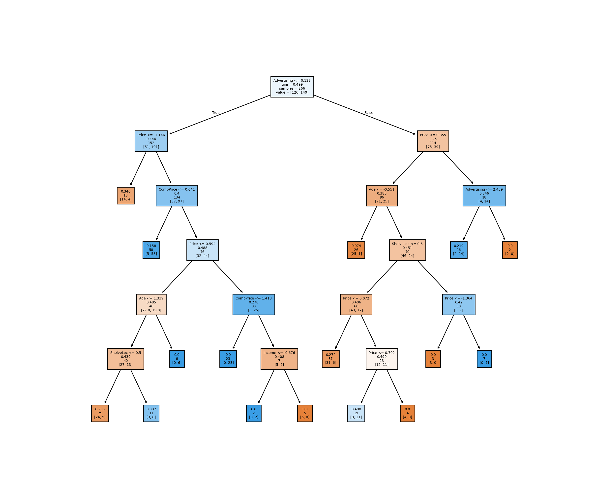
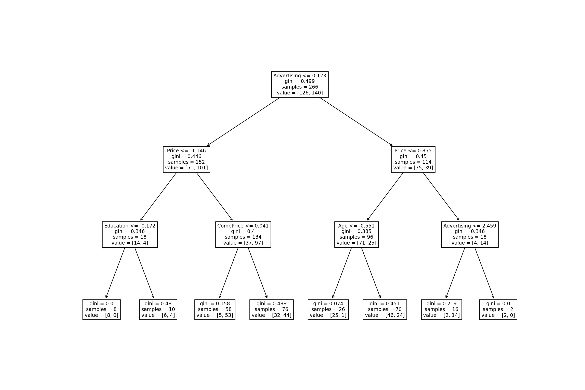
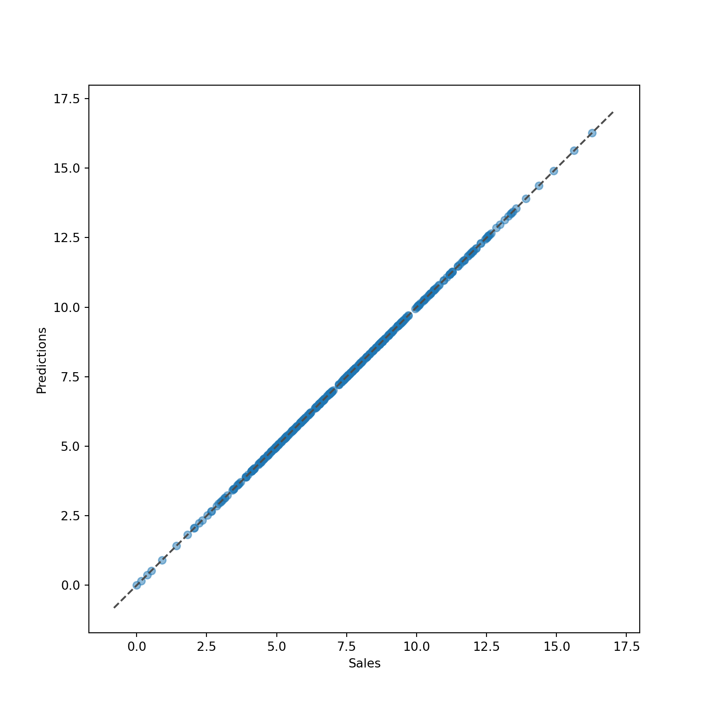

library(ISLR)
library(dplyr)
MyCarseats <- Carseats %>% mutate(SaleHigh=ifelse(Sales > 7.5, "Yes", "No"))
MyCarseats <- MyCarseats %>% select(-Sales)
set.seed(123) # for reproducibility
index_tr <- sample(x=1:nrow(MyCarseats), size=2/3*nrow(MyCarseats), replace=FALSE)
df_tr <- MyCarseats[index_tr,]
df_te <- MyCarseats[-index_tr,]Models: CART
Classification tree
In this exercise, the classification tree method is used to analyze the data set Carseats from the package ISLR. The exercise took some inspiration from this video.
Data preparation
First, install the package ISLR in order to access the data set Carseats. Use ?Carseats to read its description. To apply a classification of the sales, we first create a categorical outcome SaleHigh which equals “Yes” if Sales > 7.5 and “No” otherwise. Then we create a data frame MyCarseats containing SaleHigh and all the features of Carseats except Sales. Finally, split MyCarseats into a training and a test set (2/3 vs 1/3). Below we call them df_tr and df_te.
Note: this is not the point of this exercise but remember that in a real situation the first step of the data analysis would be an EDA.
Fit & plot
The rpart function in the package rpart can be used to fit a classification tree with the same type of formulas as naive_bayes. It can then be plotted using the function rpart.plot of the package rpart.plot.

# Load MLBA environment
library(reticulate)
use_condaenv("MLBA")We use the df_train and df_te created in R to carry out our CART training. For this, we will use the sklearn library. First, we copy our dataset from the R variable to a python variable. Then we use any encoder (e.g. OneHotEncoder, LabelEncoder, OrdinalEncoder) from sklearn.preprocessing to convert categorical data into a numeric form, which many sklearn machine learning algorithms require. In this case, we use the OneHoteEncoder which is similar to making dummy variables and turn each level of the category into a column. Also, we standardize the data in the case of python for faster computations using StandardScaler, which also helps to bring numerical stability and improve the results. After this, we divide the training and test sets into predictors (e.g., X_train) and the outcome (e.g., y_train) and initialize our classification tree and fit the model to the data.
import pandas as pd
import numpy as np
from sklearn.preprocessing import OneHotEncoder, StandardScaler
# We copy the training and testing datasets from R to Python.
carset_tr_py = r.df_tr.copy()
carset_te_py= r.df_te.copy()
# We encode categorical variables as numeric, which is necessary for CART.
le = OneHotEncoder()
cat_vars = ["ShelveLoc", "Urban", "US", "SaleHigh"]
for var in cat_vars:
# Fit the LabelEncoder to the training set and transform the training and testing sets
# We need to use the same encoder for both sets to ensure consistency
carset_tr_py_encoded = le.fit_transform(carset_tr_py[[var]].values.reshape(-1, 1))
carset_te_py_encoded = le.transform(carset_te_py[[var]].values.reshape(-1, 1))
carset_tr_py[var] = carset_tr_py_encoded.toarray()
carset_te_py[var] = carset_te_py_encoded.toarray()
# Split the data into training and testing sets
X_train, y_train = carset_tr_py.drop(columns=["SaleHigh"]), carset_tr_py["SaleHigh"]
X_test, y_test = carset_te_py.drop(columns=["SaleHigh"]), carset_te_py["SaleHigh"]
# Standardize only the continuous variables
cont_vars = ["CompPrice", "Income", "Advertising", "Population", "Price", "Age", "Education"]
scaler = StandardScaler()
X_train[cont_vars] = scaler.fit_transform(X_train[cont_vars])
X_test[cont_vars] = scaler.transform(X_test[cont_vars])
# To speed up the operation you can also transform the inputs
# X_train = X_train.to_numpy()
# y_train = y_train.to_numpy()We can now train and plot our decision tree using DecisionTreeClassifier and plot_tree functions.
from sklearn.tree import DecisionTreeClassifier, plot_tree
import matplotlib.pyplot as plt
# we clear any previous figures
plt.clf()
np.random.seed(1234)
carseats_tree = DecisionTreeClassifier().fit(X_train, y_train)
plt.figure(figsize=(20,10))
plot_tree(carseats_tree,filled=True, feature_names=X_train.columns, label = 'root',fontsize=5);
plt.savefig('tree_high_dpi', dpi=300)
# for a better quality, save the image and load it again
#plt.show()
As the image dimensions are not always great for matplotlib plots in Rstudio, we saved the image and now load it again below using an R chunk.
knitr::include_graphics("tree_high_dpi.png")Pruning
The analysis of the tree complexity can be obtained using function plotcp.
plotcp(carseats_tree)
From the graph, we can identify that, according to the 1-SE rule, the tree with 8 nodes is equivalent to the tree with 12 nodes. This 8-nodes tree should be preferred.
To prune the tree (i.e., extract the tree with 8 nodes), we can use the function prune with argument cp. The cp of the tree can be read on the bottom x-axis of the plotcp. The argument in prune should be set to any value between the cp of 8-nodes tree (0.031) and the 11-node tree (0.019). Here 0.025 is OK.
carseats_tree_prune <- prune(carseats_tree, cp=0.025)
rpart.plot(carseats_tree_prune)
Important note: The CP evaluation relies on a cross-validation procedure, which uses random number generation. This is why we have set the seed to some value (1234). You may not find the same result with another seed or if you do not set it. In any case, just be coherent with your results and prune the tree accordingly.
Let the computer do the work for you: Pruning using the 1-SE rule can be automatically obtained with the function autoprune in package adabag. Note that, because of the randomness involved in the CP evaluation, you may not find exactly the same result as the one obtained by hand. Use set.seed to make your result reproducible.

The rpart.plot package in R provides a convenient plotcp() function to plot the complexity parameter table for a decision tree fit with rpart(). Unfortunately, scikit-learn doesn’t provide an equivalent function out of the box. However, you can still calculate the complexity parameter values for your decision tree and plot them using matplotlib.
# Get the paths of the leaf nodes for the Car Seats decision tree using cost complexity pruning
path = carseats_tree.cost_complexity_pruning_path(X_train, y_train)
# Extract the effective alphas and total impurities of the leaf nodes from the path object
ccp_alphas, impurities = path.ccp_alphas, path.impurities
# Create a plot to visualize the relationship between effective alphas and total impurities
fig, ax = plt.subplots()
ax.plot(ccp_alphas, impurities, marker='o', linestyle="-");
ax.set_xlabel("Effective alpha");
ax.set_ylabel("Total impurity of leaves");
ax.set_title("Total Impurity vs Effective alpha for Car Seats dataset");
ax.invert_xaxis();
plt.show()
This plot only shows the training set results, which doesn’t tell us about over-fitting. A better approach is to compute accuracy (a different metric than rpart) on a second test set, called the validation set used solely for finding the ideal hyperparameters in machine learning. Once we choose the best hyperparameters, we re-train the model one final time with those parameters and compare everything on the test set (but we should no longer change our models based on the test set). We will learn more about this validation set during the upcoming lectures. Here we’ll use the two functions cross_val_score and KFold from the sklearn.module_selection sub-module. We will use ten folds to find the ideal alpha (equivalent to cp from rpart::rpart()). This is not using the 1-SE rule but proposes a good alternative.
from sklearn.model_selection import cross_val_score, KFold
def plotcp(X_train, y_train, random_state=123):
# Create a decision tree classifier
clf = DecisionTreeClassifier(random_state=random_state)
# Calculate the cross-validation scores for different values of alpha
path = clf.cost_complexity_pruning_path(X_train, y_train)
ccp_alphas, impurities = path.ccp_alphas, path.impurities
# Perform cross-validation for each alpha
kfold = KFold(n_splits=10, shuffle=True, random_state=random_state)
scores = []
for ccp_alpha in ccp_alphas:
clf = DecisionTreeClassifier(random_state=random_state, ccp_alpha=ccp_alpha)
score = cross_val_score(clf, X_train, y_train, cv=kfold, scoring='accuracy')
scores.append(np.mean(score))
# Plot the cross-validation scores vs alpha
fig, ax = plt.subplots()
ax.plot(ccp_alphas, scores, marker='o', linestyle="-");
ax.set_xlabel("ccp_alpha");
ax.set_ylabel("Cross-validation score (accuracy)");
ax.set_title("Pruning Complexity Parameter (ccp) vs Cross-validation Score");
ax.invert_xaxis();
plt.show()
plotcp(X_train, y_train)
We can see that the best validation scores are obtained around a ccp_alpha of 0.008. Similar to cp from rpart, in scikit-learn, the parameter controls the complexity of a classification tree by setting a penalty on the number of leaf nodes. A higher value of results in a simpler tree with fewer splits and more nodes being pruned. More specifically, alpha is the regularization parameter used for controlling the cost complexity of the tree. The cost complexity is the sum of the misclassification cost and the complexity cost of the tree. The complexity cost is proportional to the number of terminal nodes (leaves) in the tree. A higher value of alpha thus means that the model is less likely to overfit the training data and more likely to generalize better to new, unseen data. However, setting alpha too high can result in underfitting and poor model performance on both the training and test data. The optimal alpha value depends on the specific dataset and the problem being solved and can be determined through cross-validation or other model selection techniques, as demonstrated above.
Once you find the ideal alpha, you can specify it with the ccp_alpha argument in DecisionTreeClassifier(). Here we will take ccp_alpha as 0.008 for simplicity.
# Create a decision tree classifier with a ccp_alpha of 0.025
carseats_tree_prune = DecisionTreeClassifier(random_state=123, ccp_alpha=0.008)
# Fit the model to the data
carseats_tree_prune.fit(X_train, y_train);
# You can again plot the figure with
plt.clf()
plt.figure(figsize=(12,10))
plot_tree(carseats_tree_prune,filled=True, feature_names=X_train.columns, label = 'root',fontsize=5);
plt.savefig('tree_pruned_high_dpi', dpi=200)
plt.close()
knitr::include_graphics("tree_pruned_high_dpi.png")
This model is a lot simpler compared to the first tree made using python (where ccp_alpha was 0 by default).
For automatically pruning the tree, unlike the adabag::autoprune() function in R’s adabag package, scikit-learn does not have a built-in function for automatic pruning of decision trees. Instead, you can use cross-validation to determine the optimal tree depth and use that to prune the tree.
from sklearn.model_selection import GridSearchCV
# Set up the decision tree classifier
tree = DecisionTreeClassifier()
# Set up the grid search parameters
param_grid = {'max_depth': range(1, 11)}
# Run grid search cross-validation to find optimal tree depth
grid_search = GridSearchCV(tree, param_grid=param_grid, cv=10)
grid_search.fit(X_train, y_train);
# Use the best estimator to fit and prune the tree
pruned_tree = grid_search.best_estimator_
plt.clf()
fig, ax = plt.subplots(figsize=(15, 10))
plot_tree(pruned_tree, ax=ax, feature_names=X_train.columns);
plt.show()
# you can choose to re-train the model once again with this new parameter

TipPython approach vs
adabag::autoprune()
The technique above does not explicitly use the 1-SE rule for pruning the decision tree. Instead, it uses cross-validation to find the optimal tree depth based on the mean test score across all folds. According to the documentation of adabag::autoprune(), “The cross validation estimation of the error (xerror) has a random component. To avoid this randomness the 1-SE rule (or 1-SD rule) selects the simplest model with a xerror equal or less than the minimum xerror plus the standard deviation of the minimum xerror.” If you’re interested in the 1-SE, see the adapted python code for it below.
Implementing GridSearchCV with 1-SE rule
# Set up the decision tree classifier
tree = DecisionTreeClassifier()
# Set up the grid search parameters
param_grid = {'max_depth': range(1, 11)}
# Run grid search cross-validation to find optimal tree depth
grid_search = GridSearchCV(tree, param_grid=param_grid, cv=10)
grid_search.fit(X_train, y_train);
# Calculate the mean and standard error of test scores for each tree depth
mean_scores = grid_search.cv_results_['mean_test_score']
std_scores = grid_search.cv_results_['std_test_score'] / np.sqrt(10)
# Find the optimal depth using the 1-SE rule
optimal_depth = grid_search.best_params_['max_depth']
optimal_score = mean_scores[optimal_depth - 1]
se = std_scores[optimal_depth - 1]
best_depth = optimal_depth
for depth in range(optimal_depth - 1, -1, -1):
score = mean_scores[depth]
if score + se < optimal_score:
break
else:
best_depth = depth + 1
# Use the best estimator to fit and prune the tree
pruned_tree = DecisionTreeClassifier(max_depth=best_depth)
pruned_tree.fit(X_train, y_train);The results are the same as not using 1-SE.
Predictions
First, use the R plot to determine what is the prediction of the first instance of MyCarseats.
Answer
MyCarseats[1,] CompPrice Income Advertising Population Price ShelveLoc Age Education Urban
1 138 73 11 276 120 Bad 42 17 Yes
US SaleHigh
1 Yes YesFollow Left, Left, Left => The predicted answer is “No”.
The function predict can be used build the predictions of the test set (use option type="class"). This is similar to the previously seen models: the predict function used on an object of class .rpart (created by the function rpart), in fact, calls the function predict.rpart which is adapted to the model.
Obs
Pred No Yes
No 58 27
Yes 4 45Note that, like most categorical models, you may ask for the probabilities instead of the classes by setting type="prob".
predict(carseats_tree_prune, newdata=df_te, type="prob") No Yes
1 0.79824561 0.2017544
3 0.24000000 0.7600000
6 0.24000000 0.7600000
8 0.08333333 0.9166667
12 0.08333333 0.9166667
15 0.08333333 0.9166667
17 0.08333333 0.9166667
18 0.08333333 0.9166667
19 0.08333333 0.9166667
21 0.79824561 0.2017544
28 0.79824561 0.2017544
30 0.76000000 0.2400000
31 0.08333333 0.9166667
37 0.08333333 0.9166667
38 0.79824561 0.2017544
44 0.79824561 0.2017544
46 0.79824561 0.2017544
47 0.05555556 0.9444444
49 0.76000000 0.2400000
50 0.85714286 0.1428571
56 0.76923077 0.2307692
58 0.79824561 0.2017544
59 0.76000000 0.2400000
60 0.79824561 0.2017544
62 0.79824561 0.2017544
65 0.76000000 0.2400000
68 0.79824561 0.2017544
70 0.05555556 0.9444444
71 0.08333333 0.9166667
73 0.79824561 0.2017544
75 0.18750000 0.8125000
79 0.79824561 0.2017544
82 0.08333333 0.9166667
88 0.08333333 0.9166667
92 0.79824561 0.2017544
95 0.24000000 0.7600000
96 0.79824561 0.2017544
97 0.08333333 0.9166667
99 0.08333333 0.9166667
100 0.79824561 0.2017544
103 0.76000000 0.2400000
108 0.79824561 0.2017544
114 0.79824561 0.2017544
119 0.76000000 0.2400000
120 0.79824561 0.2017544
122 0.24000000 0.7600000
123 0.79824561 0.2017544
124 0.85714286 0.1428571
126 0.24000000 0.7600000
128 0.79824561 0.2017544
131 0.24000000 0.7600000
132 0.76000000 0.2400000
138 0.79824561 0.2017544
139 0.79824561 0.2017544
140 0.05555556 0.9444444
144 0.79824561 0.2017544
147 0.79824561 0.2017544
149 0.76000000 0.2400000
150 0.24000000 0.7600000
156 0.24000000 0.7600000
167 0.79824561 0.2017544
169 0.79824561 0.2017544
170 0.08333333 0.9166667
171 0.79824561 0.2017544
175 0.79824561 0.2017544
176 0.79824561 0.2017544
180 0.18750000 0.8125000
181 0.79824561 0.2017544
188 0.76000000 0.2400000
189 0.24000000 0.7600000
190 0.76000000 0.2400000
191 0.05555556 0.9444444
192 0.85714286 0.1428571
193 0.76000000 0.2400000
206 0.79824561 0.2017544
207 0.76923077 0.2307692
208 0.76000000 0.2400000
219 0.79824561 0.2017544
220 0.08333333 0.9166667
221 0.79824561 0.2017544
225 0.79824561 0.2017544
234 0.79824561 0.2017544
237 0.79824561 0.2017544
241 0.18750000 0.8125000
246 0.08333333 0.9166667
247 0.24000000 0.7600000
248 0.79824561 0.2017544
259 0.24000000 0.7600000
264 0.79824561 0.2017544
266 0.79824561 0.2017544
268 0.79824561 0.2017544
270 0.76923077 0.2307692
271 0.08333333 0.9166667
274 0.24000000 0.7600000
281 0.79824561 0.2017544
283 0.85714286 0.1428571
284 0.79824561 0.2017544
289 0.76000000 0.2400000
293 0.08333333 0.9166667
301 0.76000000 0.2400000
303 0.79824561 0.2017544
304 0.05555556 0.9444444
305 0.08333333 0.9166667
307 0.79824561 0.2017544
310 0.05555556 0.9444444
318 0.08333333 0.9166667
322 0.76000000 0.2400000
325 0.79824561 0.2017544
327 0.79824561 0.2017544
329 0.79824561 0.2017544
333 0.76000000 0.2400000
334 0.79824561 0.2017544
335 0.24000000 0.7600000
338 0.05555556 0.9444444
339 0.76000000 0.2400000
342 0.76000000 0.2400000
344 0.79824561 0.2017544
345 0.08333333 0.9166667
356 0.85714286 0.1428571
358 0.24000000 0.7600000
360 0.79824561 0.2017544
367 0.79824561 0.2017544
368 0.08333333 0.9166667
369 0.08333333 0.9166667
370 0.79824561 0.2017544
371 0.79824561 0.2017544
373 0.76000000 0.2400000
375 0.79824561 0.2017544
386 0.79824561 0.2017544
387 0.76923077 0.2307692
393 0.79824561 0.2017544
394 0.79824561 0.2017544
396 0.08333333 0.9166667
400 0.08333333 0.9166667To print a confusion matrix of the predicted labels versus the true labels, we can use the crosstab() function from the pandas library. We pass the predicted and true labels as arguments to crosstab(), and use the rownames and colnames parameters to label the rows and columns of the table, respectively.
Finally, we use the predict_proba() method of the decision tree classifier to predict the class probabilities for the test data. The predicted probabilities are stored in the y_probs variable, which is a NumPy array with shape (n_samples, n_classes).
# Predict the class labels for the test data with the python implementation
y_pred = carseats_tree_prune.predict(X_test)
# Print a confusion matrix of the predicted labels versus the true labels
print(pd.crosstab(index=y_pred, columns=y_test, rownames=['Pred'], colnames=['Obs']))Obs 0.0 1.0
Pred
0.0 52 16
1.0 20 46This tree is worse than the R implementation, probably due to differences in other default values that we did not tune for.
# Predict the class probabilities for the test data
y_probs = carseats_tree_prune.predict_proba(X_test)
print(pd.DataFrame(y_probs)) 0 1
0 0.961538 0.038462
1 0.837838 0.162162
2 1.000000 0.000000
3 0.421053 0.578947
4 0.086207 0.913793
.. ... ...
129 1.000000 0.000000
130 0.961538 0.038462
131 0.961538 0.038462
132 0.961538 0.038462
133 0.827586 0.172414
[134 rows x 2 columns]Interpretation
By looking at the tree, interpret the most important features for the Sales: the highest in the tree.
Note that, for the level Good of the ShelveLoc variable, only the Price drives the Sales (according to the tree). Otherwise, it is a subtle mixture between Price and CompPrice.
Regression tree
The regression tree concepts are the same as for classification tree. The (main) difference lies in the outcome being predicted as a value instead of a class.
To illustrate this we quickly build a tree on the Sales of the Carseats data (no training and test set here; it is simply to illustrate the numerical prediction).
We can see from the graph that the final nodes are associated to a numerical prediction. Use the plot to determine what is the prediction of the first instance of Carseats. Please note that here we are not dividing between training and test sets, and we only demonstrate how to do a regression tree, but in practice you should always do that.
Answer
Carseats[1,] Sales CompPrice Income Advertising Population Price ShelveLoc Age Education
1 9.5 138 73 11 276 120 Bad 42 17
Urban US
1 Yes YesFollow Left, Left, Left, Right => the predicted answer is 5.4.
Now make the prediction for all the data and check the quality.
For the regression task, we need to select the Sales column with continuous values and then encode it via one of the available options. The default encoder for scikit-learn’s DecisionTreeRegressor is OrdinalEncoder. This means that the categorical variables are encoded during training using an ordinal mapping of the categories to integer values. Therefore, for demonstration purposes only (it doesn’t make as much sense as OneHoteEncoder), we encode them with OrdinalEncoder. To read more about this and why it may not make sense for this dataset, click on the blue box below.
Note
OrdinalEncoder vs OneHotEncoder
If we use OrdinalEncoder to encode the categorical features, we would convert each category to a numerical value based on the order of the categories. For example, suppose the categories for ShelveLoc are “Bad”, “Good”, and “Medium”. If we use OrdinalEncoder, the encoding would be as follows: “Bad” = 1, “Good” = 2, “Medium” = 3. Similarly, for Urban and US, we might use “No” = 1 and “Yes” = 2. The resulting encoded features would be numerical, but the ordering might not be meaningful.
On the other hand, if we use OneHotEncoder to encode the categorical features, we would create a binary column for each category in each feature. For example, if we use OneHotEncoder to encode ShelveLoc, we would create three binary columns: ShelveLoc_Bad, ShelveLoc_Good, and ShelveLoc_Medium. For an instance where ShelveLoc is “Good”, the ShelveLoc_Good column would have a value of 1, and the other two columns would have a value of 0. This encoding ensures that each category is treated equally and that there is no implicit ordering between the categories.
In summary, OrdinalEncoder is appropriate when the categories have a meaningful order, such as in the case of “low”, “medium”, and “high” for a feature like Price. On the other hand, OneHotEncoder is appropriate when there is no meaningful ordering between the categories, such as in the case of Urban, US, and ShelveLoc for the CarSeats dataset.
from sklearn.tree import DecisionTreeRegressor
from sklearn.preprocessing import OrdinalEncoder
# Select different columns for the regression task from the original carsets data
X, y = r.Carseats.drop(columns=["Sales"]), r.Carseats["Sales"]
# Once again select the categorical columns (this time without `SalesHigh`)
categorical_cols = ['ShelveLoc', 'Urban', 'US']
# Encode categorical columns as integers
encoder = OrdinalEncoder()
X[categorical_cols] = encoder.fit_transform(X[categorical_cols])
# Build the regression tree model
carseats_reg = DecisionTreeRegressor(random_state=123)
carseats_reg.fit(X, y);
# Visualize the tree (a bit messy)
# fig, ax = plt.subplots(figsize=(12, 8))
# plot_tree(carseats_reg, ax=ax, feature_names=X.columns)
# plt.show()# Make predictions on the training data
carseat_reg_pred = carseats_reg.predict(X)
# Create a scatter plot of predicted versus true values
plt.clf()
fig, ax = plt.subplots(figsize=(8, 8))
ax.scatter(y, carseat_reg_pred, alpha=0.5);
ax.set_xlabel('Sales');
ax.set_ylabel('Predictions');
ax.plot(ax.get_xlim(), ax.get_ylim(), ls="--", c=".3");
plt.show()

This perfect line indicates that we (perfectly) over-fit the data, which is a significant danger (bias-variance trade-off). That’s why you need both training and test sets (and preferably a validation set)!
You turn
Use a regression tree to fit nursing data (outcome = cost). Fit the tree using a training set, prune the tree and make the scatterplot “obs vs pred” on the test set to analyze the quality.